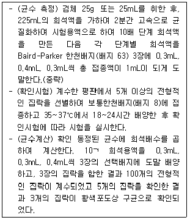

식품기사 (2022-04-24 기출문제)
1과목: 식품위생학
1. 경구감염병의 특성과 가장 거리가 먼 것은?
- 수인성 전파가 일어날 수 있다.
- 2차 감염이 발생할 수 있다.
- 미량의 균으로도 감염될 수 있다.
- 식중독에 비하여 잠복기가 짧다.
(정답률: 70%)

2. 식품등의 표시기준에 관한 용어의 정의로 틀린 것은?
- 당류 : 식품 내에 존재하는 모든 단당류와 이당류의 합
- 트랜스지방 : 트랜스구조를 1개 이상 가지고 있는 비공액형 모든 불포화지방
- 유통기한 : 제품의 제조일로부터 소비자에게 판매가 허용되는 기한
- 영양강조표시 : 제품의 일정량에 함유된 영양소의 함량을 표시하는 것
(정답률: 70%)
3. HACCP 시스템 적용 시 준비단계에서 가장 먼저 시행해야 하는 절차는?
- 위해요소분석
- HACCP팀 구성
- 중요관리점 결정
- 개선조치 설정
(정답률: 88%)
4. 다이옥신(dioxin)에 대한 설명이 틀린 것은?
- 자동차 배출 가스, 각종 PVC 제품 등 쓰레기의 소각과정에서도 생성된다.
- 다이옥신 중 2,3,7,8-TCDD가 독성이 가장 강한 것으로 알려져 있다.
- 다이옥신 색과 냄새가 없는 고체물질로 물에 대한 용해도 및 증기압이 높다.
- 환경시료에서 미량의 다이옥신 분석이 어렵다.
(정답률: 45%)
5. 다음 중 환원성 표백제가 아닌 것은?
- 아황산나트륨
- 무수아황산
- 차아염소산나트륨
- 메타중아황산칼륨
(정답률: 69%)
6. 식품첨가물 중 di-멘톨은 어떤 분류에 해당되는가?
- 보존료
- 착색료
- 감미료
- 향료
(정답률: 53%)
7. 다음 중 감염형 식동죽이 아닌 것은?
- 장염비브리오 식중독
- 클로스트리디움 보툴리늄 식중독
- 살모넬라 식중독
- 리스테리아 식중독
(정답률: 78%)
8. 식품조사(food irradiation)처리에 이용할 수 있는 선종이 아닌 것은?
- 감마선
- 전자선
- 베타선
- 엑스선
(정답률: 29%)
9. 식품제조ㆍ가공업소의 작업 관리 방법으로 틀린 것은?
- 작업장(출입문, 창문, 벽, 천장 등)은 누수, 외부의 오염물질이나 해충ㆍ설치류 등의 유입을 차단할 수 있도록 밀폐 가능한 구조이어야 한다.
- 식품 취급 등의 작업은 안전사고 방지를 위하여 바닥으로부터 60cm 이하의 높이에서 실시한다.
- 작업장은 청결구역(식품의 특성이 따라 청결구역은 청결구역과 준청결구역으로 구별할 수 있다.)과 일반구역으로 분리하고 제품의 특성과 공정에 따라 분리, 구획 또는 구분할 수 있다.
- 작업장은 배수가 잘 되어야 하고 배수로에 퇴적물이 쌓이지 아니 하여야 하며, 배수구, 배수관 등은 역류가 되지 아니 하도록 관리하여야 한다.
(정답률: 89%)
10. 각 위생처리제와 그 특징이 바르게 연결된 것은?
- Hypochlorite - 사용범위가 넓지 않음
- Quats - Gram 음성균에 효과적임
- Iodophors - 부식성이고 피부 자극이 적음
- Acid anionics - 증식세포에 넓게 작용함
(정답률: 36%)
11. 대장균지수(Coil index)란?
- 검수 10mL 중 대장균군의 수
- 검수 100mL 중 대장균군의 수
- 대장균군을 검출할 수 있는 최소검수량
- 대장균군을 검출할 수 있는 최소검수량의 역수
(정답률: 37%)
12. 단백뇨를 주증상으로 하며 체내 칼슘의 불균형을 초래하는 금속중독은?
- 납 중독
- 망간 중독
- 수은 중독
- 카드뮴 중독
(정답률: 49%)
13. 통조림 변패 중 Flat sour에 대한 설명으로 틀린 것은?
- 통의 외관은 정상이나 내용물이 산성이다.
- Acetobacter 속이 원인균이다.
- 유포자 호열성균에 의한 것이다.
- 가열이 불충분한 통조림에서 발생하기 쉽다.
(정답률: 50%)
14. 사람과동물이 같은 병원체에 의하여 발생되는 질병을 나타내는 용어는?
- 경구감염병
- 인수공통감염병
- 척추동물감염병
- 수인성감염병
(정답률: 96%)
15. 금속제 설비에 대한 설명으로 틀린 것은?
- 토마토 가공 시 알루미늄제보다는 스테인리스스틸 재질 기구를 사용한다.
- 양배추와 같이 산을 함유한 식품은 알루미늄제 기구가 좋다.
- 간장, 된장 등 산이나 염분을 많이 함유한 식품은 알루미늄제 용기에 보관하는 것을 되도록 삼간다.
- 스테인리스스틸 용기에 물을 반복하여 가열하면 재질의 성분이 용출될 수 있다.
(정답률: 62%)
16. 식품별 행정처분의 사유가 아닌 것은?
- 과실주 : potassium aluminium silicate 사용
- 떡 제조용 팥 앙금 : 소브산칼슘 0.2g/kg 검출
- 냉동닭고기 : 니트로푸란계 대사물질 Semicarbazide 10μg/kg 검출
- 오이피클 : 세균발육 양성
(정답률: 58%)
17. 어육의 부패를 나타내는 지표값으로 틀린 것은?
- Volatile basic nitrogen(VBN) : 30~40mg%
- Trimethylamine(TBA) : 5~6mg%
- Histamine : 8~10 mg%
- pH : 5.5
(정답률: 58%)
18. 살균ㆍ소독에 대한 설명으로 옳지 않은 것은?
- 열탕 또는 증기소독 후 살균된 용기를 충분히 건조해야 그 효과가 유지된다.
- 살균은 세균, 효모, 곰팡이 등 미생물의 영양 세포를 불활성화시켜 감소시키는 것을 말한다.
- 자외선 살균은 대부분의 물질을 투과하지 않는다.
- 방사선은 발아억제 효과만 있고 살균 효과는 없다.
(정답률: 75%)
19. 미생물의 대사물질에 의한 독성물질이 아닌 것은?
- Aflatoxin
- Amygdalin
- Rubratoxin
- Ochratoxin
(정답률: 59%)
20. Benzoic acid의 특성으로 옳은 것은?
- 보존료로 사용한다.
- pH가 낮을수록 효과가 적다.
- ‘소브산’이라고 한다.
- 항산화제로 사용한다.
(정답률: 48%)
2과목: 식품화학
21. 유지의 산패 측정법에 대한 설명으로 틀린 것은?
- Peroxide value는 지방산화가 계속 될수록 함께 계속해서 증가한다.
- TBA값은 지방산패 중 생성된 malonaldehyde를 측정하는 방법이다.
- Anisidine값은 주로 2-alkenal의 함량을 측정한다.
- CDA값은 공액형 이중결합을 측정하는 방법이다.
(정답률: 35%)
22. 중성지질로 구성된 식품을 효과적으로 측정할 수 있는 속슬렛 조지방 측정법은?
- 산분해법
- 뢰제ㆍ고트리브(Roese-Gottlieb)법
- 클로로포름 메탄올(chlorofom-methanol) 혼합용액 추출법
- 에테르(ether)추출법
(정답률: 59%)
23. 지용성 비타민의 특성으로 옳지 않은 것은?
- 기름과 유기용매에 녹는다.
- 결핍증세가 서서히 나타난다.
- 비타민의 전구체가 없다.
- 1일 섭취량이 필요 이상일 때는 체내에 저장된다.
(정답률: 64%)
24. CuSO4의 알칼리 용액에 넣고 가열할 때 Cu2O의 붉은색 침전이 생기지 않는 것은?
- maltose
- sucrose
- lactose
- glucose
(정답률: 37%)
25. 버터나 생크림을 수저를 떠서 접시에 올려놓았을 때 모양을 그대로 유지하는 물리적 성질은?
- 점성
- 탄성
- 소성
- 점탄성
(정답률: 57%)
26. 무기질의 주요한 생리작용으로 옳지 않은 것은?
- Ca : 뼈, 치아 등 경조직 구성원조
- Fe : 혈색소의 구성물질
- Cl : 삼투압 조절
- S : 갑상선호르몬의 구성성분
(정답률: 65%)
27. 식품의 관능검사에서 종합적 차이검사에 해당하는 것은?
- 이점비교검사
- 일-이점검사
- 순위법
- 평점법
(정답률: 39%)
28. 다음 중 비효소적 갈변반응이 아닌 것은?
- 메일라드(마이얄) 반응
- 캐러멜화 반응
- 비타민C 산화에 의한 갈변반응
- 티로시나아제에 의한 갈변반응
(정답률: 53%)
29. 식품첨가물로서 사용되는 점성물질인 검류(gums) 중 미생물이 만들어 내는 고무질물질(microbial gums)에 해당하는 것은?
- 트라가칸스 고무(Tragacanth Gum)
- 카라야 고무(Karaya Gum)
- 구아 고무(Guar Gum)
- 덱스트란(Dextrans)
(정답률: 48%)
30. 서로 다른 맛 성분을 혼합하여 각각의 고유맛이 약해지거나 사라지는 현상은?
- 맛의 대비
- 맛의 억제
- 맛의 상극
- 맛의 상쇄
(정답률: 72%)
31. 우유를 태양이나 형광등 아래에서 보관하면 이취가 빨리 발생한다. 이러한 빛의 조사에 의해 발생하는 품질 변화와 관련된 설명으로 옳은 것은?
- 우유에 존재하는 감광제에 의해 일중항산소 등이 발생하였다.
- 우유 속 유당이 분해되면서 aldehyde가 발생하였다.
- 삼중항산소가 일중항산소보다 반응성이 크다.
- 우유의 이취 제거를 위해 라이보플라빈 함량이 증가시킨다.
(정답률: 19%)
32. β-amylase가 작용할 수 있는 전분 내의 결합은?
- a-1,4 glycoside 결합
- β-1,4 glycoside 결합
- a-1,6 glycoside 결합
- β-1,6 glycoside 결합
(정답률: 48%)
33. 두류에 대한 설명 중 옳은 것은?
- 땅콩에는 포화지방이 많은 편으로 stearic acid, palmitic acid의 함량이 많다.
- 땅콩을 가공 및 보관하는 과정에서 잘못 처리하게 되면 곰팡이의 번식으로 aflatoxin이라는 발암물질이 생성될 우려가 있다.
- 땅콩에는 다른 콩류보다 칼륨과 칼슘이 많이 함유되어 있는데 이들은 파이틴(phuin) 형태로 존재하고 있다.
- 완두콩을 통조림으로 제조 시 열처리에 의한 갈색 변색을 방지하기 위하여 황산철을 첨가하는데, 이는 변색뿐 아니라 비타민 C의 파괴를 억제한다.
(정답률: 48%)
34. 관능검사 중 흔히 사용되는 척도의 종류가 아닌 것은?
- 명목 척도
- 서수 척도
- 비율 척도
- 지수 척도
(정답률: 33%)
35. 육류 가공과 관련한 수분흡수 및 유지에 대한 설명으로 틀린 것은?
- 육류를 마쇄하면 육류의 수분흡수 능력은 증가한다.
- 도살 직후 수분흡수 능력은 매우 큰 수치를 보였다가 24~48시간에 걸쳐 계속 감소된다.
- 칼슘, 아연 등의 이온들은 육류의 수분유지 능력을 증가시킨다.
- 알칼리 또는 알칼리염은 pH를 알칼리성 쪽으로 이동시키고 육류의 수분흡수 능력을 증대시킨다.
(정답률: 32%)
36. 증류수에 녹인 비타민 C를 정량하기 위해 분광광도계(spectrophotometer)를 사용하였다. 분광광도계에서 나온 시료의 흡광도 결과와 비타민 C 함량의 관계를 구하기 위하여 이용해야 하는 것은?
- 람베르트-비어 법칙(Lambert-Beer's law)
- 페히너 법칙(Fechner's law)
- 웨버의 법칙(Weber's law)
- 미켈리스-멘텐식(Michaelis-Menten's equation)
(정답률: 46%)
37. 지방산화 중 발생하는 휘발성분에 대한 설명으로 옳지 않은 것은?
- 오메가-6 지방산인 레놀레산으로부터 유래된 전형적인 휘발성분은 hexanal이다.
- 유지의 자동산화과정 중 휘발성분은 hydroperoxide 생성 전 단계에서 생성된다.
- Propanal은 오메가-3 지방산인 리놀렌산으로부터 유래된 산화휘발성분이다.
- hexanal 함량 비교를 통해 산패정도를 측정할 수 있다.
(정답률: 26%)
38. 과당의 특징으로 옳지 않은 것은?
- 단맛이 강하다.
- 용해도가 크다.
- 과포화되기 쉽다.
- 흡습성이 약하다.
(정답률: 60%)
39. 메밀전분을 갈아서 만든 유동성이 있는 액체성 물질을 가열하고 난 뒤 냉각하였더니 반고체 상태(묵)가 되었다. 이 묵의 교질상태는?
- gel
- sol
- 염석
- 유화
(정답률: 75%)
40. 영양 성분에 대한 설명 중 옳은 것은?
- 나트륨은 체중의 0.15~0.2% 정도이며 체내 세포내외의 삼투압과 수분평형의 유지 등 중요한 역할을 한다.
- 오메가03계열의 불포화 지방산보다 오메가 6계열의 불포화 지방산을 섭취하는 것이 바람직하다.
- 토마토에 함유된 라이코펜 성분은 베타-이오논환을 갖고 있어 비타민 A로 전환될 수 있다.
- 지용성ㆍ수용성 비타민은 몸에 필요한 양보다 많이 섭취되면 필요한 양만큼만 이용하고, 불필요한 양은 축적되지 않고 몸 밖으로 배설된다.
(정답률: 39%)
3과목: 식품가공학
41. 유지의 탈검공정(degumming process)에서 주로 제거되는 성분은?
- 인지질(phospholipid)
- 알데하이드(aldehyde)
- 케톤(ketone)
- 냄새성분
(정답률: 52%)
42. 통조림 제조 시 탈기를 하는 목적과 가장 거리가 먼 것은?
- 호기성균의 발육 방지
- 혐기성균의 발육 방지
- 내용물의 변색 방지
- 캔의 파손 방지
(정답률: 41%)
43. 우유를 이용하여 분유 제조 시 가장 널리 사용되는 방법은?
- 냉동건조
- Drum 건조
- Foam-mat 건조
- 분무건조
(정답률: 61%)
44. 당질원료를 이용하여 10 이하의 당 분자가 직쇄 또는 분지결합 하도록 효소를 작용시켜 얻은 당액이나 이를 여과, 정제, 농축한 액상 또는 분말상의 것은?
- 과당류
- 당류가공품
- 포도당
- 올리고당류
(정답률: 35%)
45. 쌀의 도정 정도를 표시하는 도정률에 대한 설명으로 옳은 것은?
- 쌀의 필수 탄수화물 제거율의 정도에 따라 표시된다.
- 도정된 정미의 무게가 현미 무게의 몇 % 인가로 표시된다.
- 도정된 쌀알이 파괴된 정도로 표시된다.
- 도정과정 중에 손실된 영양소의 %로 표시된다.
(정답률: 48%)
46. 다음 중 두부 응고제로 사용되는 식품첨가물은?
- 이산화염소
- 과산화염소
- 염화칼슘
- 브롬산칼륨
(정답률: 66%)
47. 영아용 조제식의 단백원과 원료에 대한 설명으로 틀린 것은?
- 글루텐을 단백원으로 사용한다.
- 분리대두단백에서 분리한 단백질을 단백원으로 할 수 있다.
- 원료는 식품조사처리를 하지 않은 것이어야 한다.
- 코코아는 원료로 사용할 수 없다.
(정답률: 43%)
48. 전단속도(shear rate)가 커짐에 따라 겉보기점도(apparent viscosity)가 증가하는 유체는?
- Newtonian
- Pseudo plastic
- Dilatant
- Bingham plastic
(정답률: 36%)
49. 어류 통조림 제조 시 나타나는 스트루바이트(struvite)에 대한 설명으로 틀린 것은?
- 통조림 내용물에 유리 모양의 결정이 석출되는 현상이다.
- 어류에 들어있는 마그네슘 및 인화합물과 어류가 분해되어 생성된 암모니아가스가 결합하여 생성된다.
- 중성 혹은 약알칼리성 통조림에 생기기 쉽다.
- 살균한 후 통조림을 급랭시키면 나타나는 현상이다.
(정답률: 42%)
50. 보리의 도정방식이 아닌 것은?
- 혼수도정
- 무수도정
- 할맥도정
- 건식도정
(정답률: 28%)
51. 소금 절임 방법에 대한 설명 중 틀린 것은?
- 소금농도가 15% 정도가 되면 보통일반세균은 발육이 억제된다.
- 일반적으로 소형어는 마른간법으로 대형어는 물간법으로 절인다.
- 마른간법과 물간법의 단점을 보완한 것이 개량물간법이다.
- 개량마른간법의 경우는 물간법으로 가염지를 한다.
(정답률: 40%)
52. 당도 12%인 사과 펄프 100kg을 사용하여 제품당도 65%인 사과잼을 80%의 농축율로 제조할 경우 순도 97%인 설탕이 약 몇 kg 첨가되어야 하는가?
- 53.6
- 67.8
- 88.9
- 94.5
(정답률: 35%)
53. 식육의 사후 경직과 숙성에 대한 설명으로 틀린 것은?
- 사후 경직 - 도살 후 시간이 경과함에 따라 근육이 굳어지는 현상
- 식육 냉동 - 사후 경직 억제
- 식육 숙성 - 육의 연화과정, 보수력 증가
- 숙성 속도 - 적정 범위 내에서 온도가 높으면 신속하게 진행
(정답률: 50%)
54. 유체의 흐름에 있어 외부에서 가해진 에너지와 마찰에 의한 에너지 손실이 없다고 가정할 때 유체 에너지와 관계되지 않는 것은?
- 위치 에너지
- 운동 에너지
- 기계 에너지
- 압력 에너지
(정답률: 46%)
55. 건강기능식품과 관련한 식물스테롤에 대한 설명으로 틀린 것은?
- 인체 내에서 합성되나 필요량보다 적으므로 식이로 보충해야 한다.
- 이중결합이 많으며 배당체 형태로 존재하기도 한다.
- 혈중 콜레스테롤 저하 효과가 있다.
- 생체 이용률이 전반적으로 낮다.
(정답률: 35%)
56. 밀감 통조림의 백탁에 대한 설명 중 틀린 것은?
- hesperidin이 용출되어 백탁이 형성된다.
- 조기 수확한 밀감에서 자주 발생한다.
- 수세를 너무 길게 하면 발생하기 쉽다.
- 산 처리를 길게, 알칼리 처리를 짧게 하면 억제된다.
(정답률: 45%)
57. 치즈 제조에 쓰이는 응유 효소는?
- 레넷(rennet)
- 펩신(pepsin)
- 파파인(papain)
- 브로멜린(bromelin)
(정답률: 72%)
58. 유지를 정제한 다음 정제유에 수소를 첨가하여 가공하면 유지는 어떻게 변하는가?
- 융점이 저하된다.
- 융점이 상승한다.
- 성상이나 융점은 변하지 않는다.
- 이중 결합에 변화가 없다.
(정답률: 49%)
59. 도관을 통하여 흐르는 뉴턴액체(Newtonian fluid)의 Reynolds 수를 측정한 결과 2500이었다. 이 액체 흐름의 형태는?
- 유선형(streamline)
- 전이형(transition region)
- 교류형(turbulent)
- 정치형(static state)
(정답률: 42%)
60. 5℃에서 저장된 양배추 2000kg의 호흡열 방출에 의해 냉장고 안에 제공되는 냉동부하는? (단, 5℃에서 양배추의 저장을 위한 열방출은 63W/ton이다.)
- 28 W
- 63 W
- 100 W
- 126 W
(정답률: 42%)
4과목: 식품미생물학
61. 고구마 연부병을 유발하는 미생물은?
- Bacillus subtilis
- Aspergillus oryzae
- Saccharomyces cereʋisiae
- Rhizopus nigricans
(정답률: 43%)
62. 김치 숙성에 관여하는 균이 아닌 것은?
- Leucorostoc mesenteroides
- Lactobacillus breʋis
- Lactobacillus plantarum
- Bacillus subtilis
(정답률: 50%)
63. 산막효모의 특징으로 틀린 것은?
- 알코올 발효력이 강하다.
- 산화력이 강하다.
- 다극출아로 증식하는 효모가 많다.
- 대부분 양조과정에서 유해균으로 작용한다.
(정답률: 22%)
64. 유기물을 분해하여 호흡 또는 발효에 의해 생기는 에너지를 이용하여 증식하는 균은?
- 광합성균
- 화학합성균
- 독립영양균
- 종속영양균
(정답률: 48%)
65. 미생물 분류상 효모가 아닌 것은?
- Saccharomyces cereʋisiae
- Monascus anka
- Zygosaccharomyces rouxii
- Rhodotorula glutinis
(정답률: 22%)
66. 미생물의 일반적인 생육곡선에서 정지기(정상기, stationary phase)에 대한 설명으로 옳지 않은 것은?
- 분열균수와 사멸균수가 평형을 이루는 시기이다.
- 생균수가 최대에 도달하는 시기이다.
- 균이 왕성하게 증식하며 생리적 활성이 가장 높은 시기이다.
- 내생포자를 형성하는 세균은 보통 이 시기에 포자를 형성한다.
(정답률: 32%)
67. Pyruvic acid가 호기적으로 완전히 산화되어 이산화탄소(CO2)와 물(H2O)이 되는 대사과정이 아닌 것은?
- 전자전달계
- TCA 회로
- 글리옥신산 회로(glyoxylate cycle)
- EMP 회로
(정답률: 40%)
68. 과일리나 채소를 부패시킬 뿐만 아니라 보리나 옥수수와 같은 곡류에서 zearalenone이나 fumonisin 등의 독소를 생산하는 곰팡이는?
- Mucor 속
- Fusarium 속
- Aspergillus 속
- Rhizopus 속
(정답률: 25%)
69. 미생물 세포에서 무기염류의 기능이 잘못 연결된 것은?
- Ca-호흡계의 cytochrome, catalase, peroxidase 등의 구성성분
- K-균체내 삼투압과 pH 조절
- P-ATP, ADP 및 NAD와 같은 조효소의 구성성분
- Mg-세포막, 리보솜, DNA와 RNA등의 안정화
(정답률: 34%)
70. 당으로부터 에탄올 발효능이 강한 세균은?
- Vibrio 속
- Escherichia 속
- Zymomonas 속
- Proteus 속
(정답률: 25%)
71. 미생물의 올바른 명명법은?
- 과명(family)과 속명(genus)을 순서대로 쓴다.
- 과명(family)과 종명(species)을 순서대로 쓴다.
- 종명(species)과 속명(genus)을 순서대로 쓴다.
- 속명(genus)과 종명(species)을 순서대로 쓴다.
(정답률: 41%)
72. 무포자 효모에 속하는 것은?
- Saccharomyces 속
- Pichia 속
- Rhodotorula 속
- Hansenula 속
(정답률: 38%)
73. 세균의 지질다당류(lipopolysaccharide)에 대한 설명 중 옳은 것은?
- 그람양성균의 세포벽 성분이다.
- 세균의 세포벽이 양(+)전하를 띠게 한다.
- 지질 A, 중신 다당체, H 항원의 세부분으로 이루어져 있다.
- 독성을 나타내는 경우가 많아 내독소로 작용한다.
(정답률: 19%)
74. 아래의 황색포도상구균 정량 시험 후 시험용액 1mL 당 균수를 계산하면 얼마인가?

- 80
- 600
- 800
- 800
(정답률: 49%)
75. 효모의 미세구조에 대한 설명으로 옳지 않은 것은?
- 액포가 있다.
- 유전물질은 핵막으로 둘러 싸여있다.
- 협막이 있다.
- 출하혼이 있다.
(정답률: 22%)
76. EMP 경로에서 생성될 수 없는 물질은?
- Lecithin
- Acetaldehyde
- Lactate
- Pyruvate
(정답률: 45%)
77. 가수분해 효소가 아닌 것은?
- Carboxy peptidase
- Raffinase
- Invertase
- Fumarate hydratase
(정답률: 16%)
78. 홍조류에 대한 설명으로 틀린 것은?
- 클로로필 이외에 피코빌린이라는 색소를 갖고 있다.
- 한천을 추출하는 원료가 된다.
- 홍조류 대부분은 단세포 조류이다.
- 엽록체를 갖고 있어 광합성을 하는 독립영양생물이다.
(정답률: 33%)
79. 가근이 있는 곰팡이는?
- Mucor
- Rhizopus
- Aspergillus
- penicillium
(정답률: 34%)
80. 천자배양(stab culture)에 가장 적합한 균은?
- 호염성균
- 호열성균
- 호기성균
- 혐기성균
(정답률: 38%)
5과목: 생화학 및 발효학
81. 효소반응과 관련하여 경쟁적 저해(competitive inhibition)에 대한 설명으로 옳은 것은?
- Km 값은 변화가 없다.
- Vmax 값은 감소한다.
- Lineweaver-Burk plot의 기울기에는 변화가 없다.
- 경쟁적 저해제의 구조는 기질의 구조와 유사하다.
(정답률: 48%)
82. DNA를 구성하는 염기(base)가 아닌 것은?
- 아데닌(adenine)
- 우라실(uracil)
- 구아닌(guanine)
- 시토닌(cytosine)
(정답률: 64%)
83. 요소회로(Urea cycle)를 형성하는 물질이 아닌 것은?
- ornithine
- citrulline
- arginine
- glutamic acid
(정답률: 58%)
84. glucose oxidase의 이용성과 관계없는 것은?
- 포도당의 제거
- 산소의 제거
- 포도당의 정량
- 식품의 고미질 제거
(정답률: 48%)
85. ɑ-aminobutyric acid는 어느 아미노산의 analog 인가?
- Lysine
- Valine
- Threonine
- Methionine
(정답률: 35%)
86. 광학적 기질 특이성에 의한 효소의 반응에 대한 설명으로 옳은 것은?
- Urease는 요소만을 분해한다.
- Lipase는 지방을 우선 가수분해하고 저급의 ester도 서서히 분해한다.
- Phosphatase는 상이한 여러 기질과 반응하나 각 기질은 인산기를 가져야 한다.
- L-Amino acid acylase는 L-amino acid에는 작용하나 D-amino acid에는 작용하지 않는다.
(정답률: 41%)
87. RNA의 뉴클레오티드 사이의 결합을 가수분해하는 효소는?
- Ribonuclease
- Polymerase
- Deoxyribonuclease
- Ribonucleotidyl transferase
(정답률: 43%)
88. 젖산발효에서 균과 주요 원료가 잘못 짝지어진 것은?
- Lactobacillus delbrueckii - glucose
- Lactobacillus leichmannii - glucose
- Lactobacillus bulgaricus - whey
- Lactobacillus pentosus - whey
(정답률: 22%)
89. Phenylketone뇨증(phenylketonuria, PKU)은 관리방법으로 옳은 것은?
- 페닐알라닌을 투여해야 한다.
- 타이로신(tyrosine)이 들어있지 않은(낮은) 단백질 음식을 섭취해야 한다.
- 페닐알라닌(phenylalanine)이 들어있지 않은(낮은) 단백질 음식을 섭취해야 한다.
- 우유를 많이 섭취해야 한다.
(정답률: 47%)
90. 세대시간이 15분인 세균 1개를 1시간 배양했을 때의 균수는?
- 4
- 8
- 16
- 40
(정답률: 54%)
91. t-RNA는 단백질의 합성에 중요한 역할을 하는데 주로 어느 물질의 운반역할을 하는가?
- 당질
- 효소
- 핵산
- 아미노산
(정답률: 50%)
92. 다음 중 제조방법이 병행복발효주에 속하는 것은?
- 맥주
- 약주
- 사과주
- 위스키
(정답률: 40%)
93. 괴혈병 치료 등의 생리적인 특성을 갖고 있고 생물체 내에서 환원제(reducing agent)로 작용하는 비타민은?
- Vitamin D
- Vitamin K
- Cobalamin
- Ascorbic acid
(정답률: 32%)
94. 체내에서 진행되는 지방산 분해 대사과정에 대한 설명으로 틀린 것은?
- 중성지방이 호르몬 민감성 리파아제에 의해 가수분해된다.
- 지방산은 산화되기 전에 Acyl-CoA에 의해 활성화 된다.
- 팔미트산의 완전 산화로 100분자의 ATP를 생성한다.
- 카르니틴은 활성화된 긴 사슬 지방산들을 미토콘드리아 기질 안으로 운반한다.
(정답률: 44%)
95. 당신생(gluconeogenesis)이라 함은 무엇을 의미하는가?
- 포도당이 혐기적으로 분해되는 과정
- 포도당이 젖산이나 아미노산 등으로부터 합성되는 과정
- 포도당이 산화되어 ATP를 합성하는 과정
- 포도당이 아미노산으로 전환되는 과정
(정답률: 47%)
96. 탄소단위의 운반체인 tetrahydrofolate를 만드는 비타민은?
- 엽산(folic acid)
- 토코페롤(tocopherol)
- 티아민(thiamine)
- 니아신(niacin)
(정답률: 37%)
97. 다음 단당류 중 ketose이면서 hexose(6탄당)인 것은?
- glucose
- ribulose
- fructose
- arabinose
(정답률: 53%)
98. 당밀의 알코올 발효 시 밀폐식 발효의 장점이 아닌 것은?
- 잡균오염이 적다.
- 소량의 효모로 발효가 가능하다.
- 운전경비가 적게 든다.
- 개방식 발효보다 수율이 높다.
(정답률: 50%)
99. 왓슨(Watson)과 크릭(Criek)이 주장한 DNA 구조에 대한 설명으로 틀린 것은?
- Adenine과 Thymine은 소수결합이 2개이다.
- 각 사슬의 골격구조는 염기와 당으로 이루어져 있다.
- Nucleotide 간의 결합은 3‘, 5’
- 염기쌍의 상보적인 소수결합은 purine 계열 염기와 pyrimidine 계열 염기 사이에 이루어져 있다.
(정답률: 28%)
100. 식물세포에서 광합성을 담당하는 소기관인 엽록체(chloroplast)에 대한 설명으로 틀린 것은?
- Thylakoids라 불리는 일련의 서로 연결된 disks로 구성된 복잡한 축구공 모양의 구조이다.
- 엽록체 중 chlorophyll 색소는 porphyrin 핵에 Fe가 결합된 구조이다.
- 엽록체에는 핵 중의 DNA와는 별개의 DNA가 존재한다.
- 엽록체 중에도 세포질에 존재하는 ribosome과는 다른 70S ribosome이 존재한다.
(정답률: 29%)